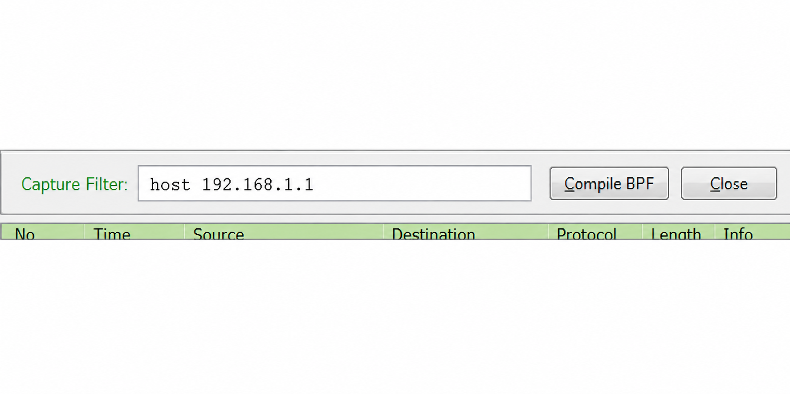
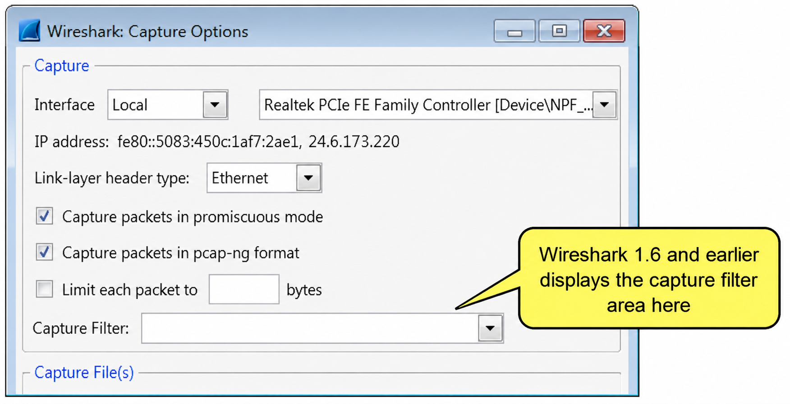
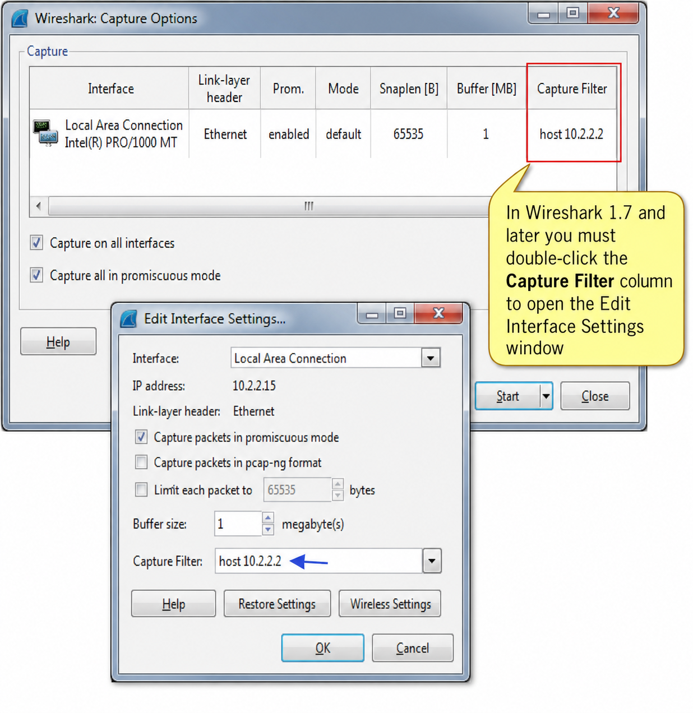
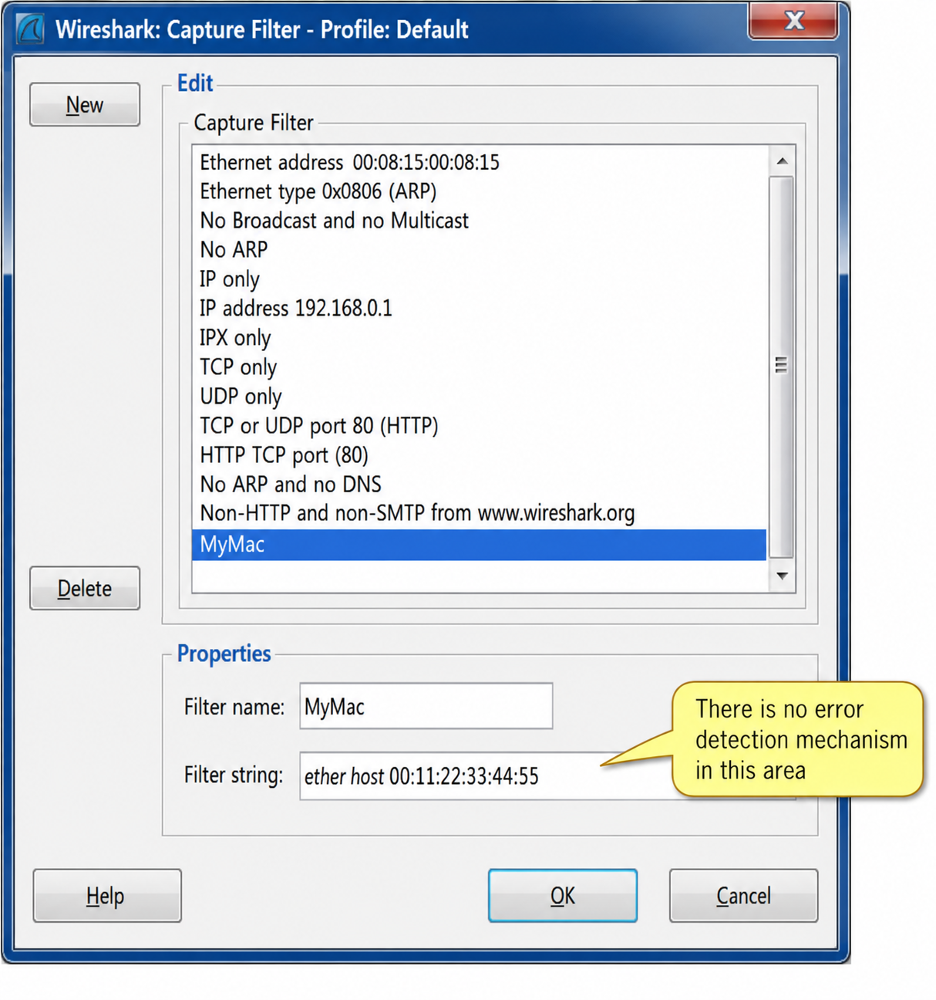
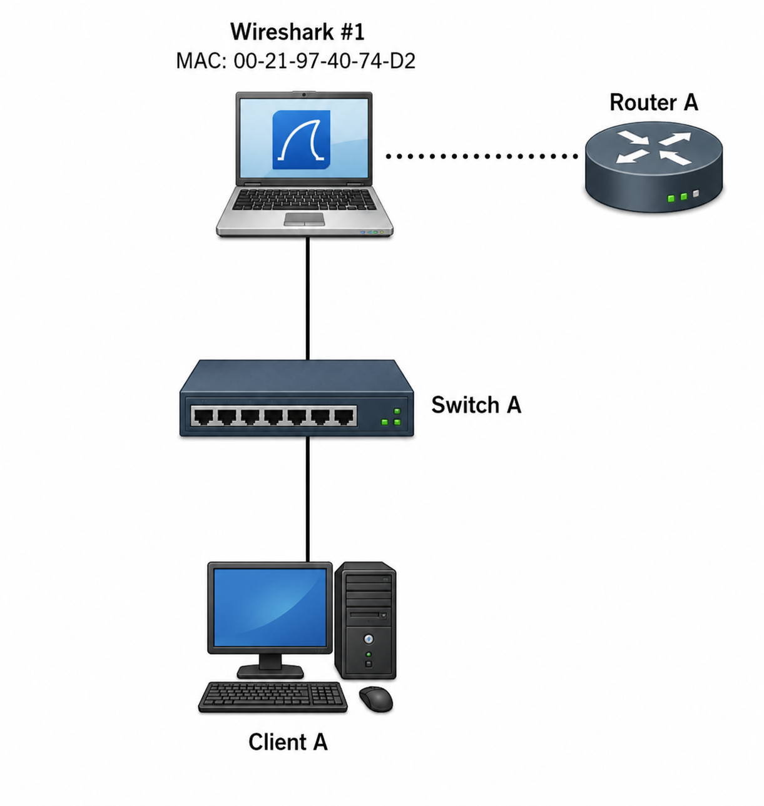
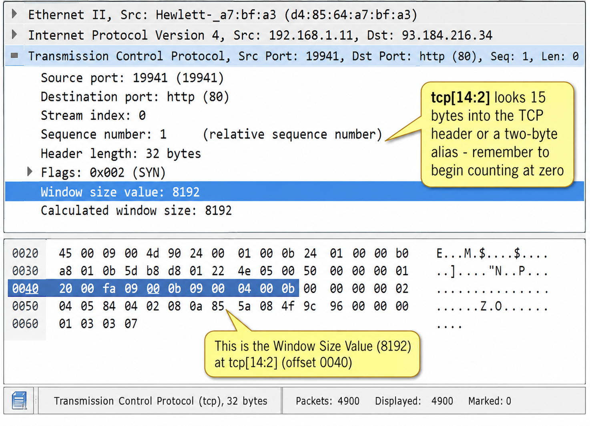
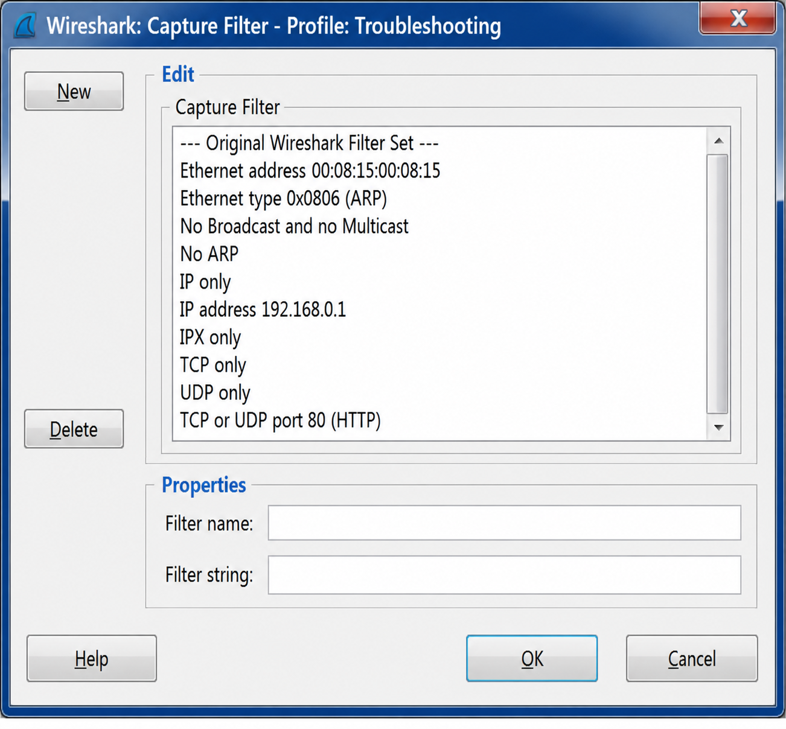
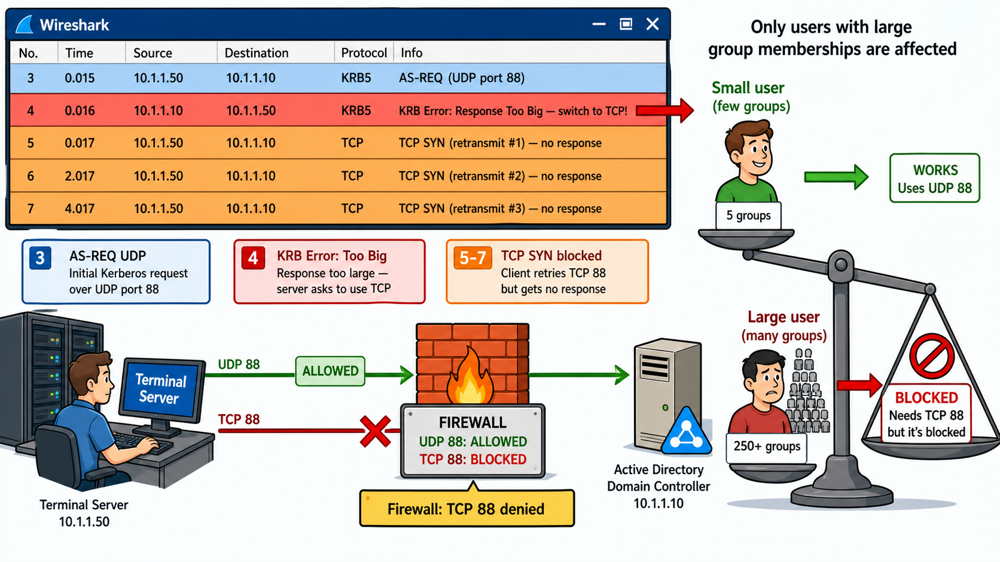

Capture filters use BPF syntax and run before packets reach Wireshark's engine — discarded packets are gone permanently. If that's the case, why would you ever prefer a capture filter over just capturing everything and using a display filter? When is each the right choice?
The Purpose of Capture Filters
Capture filters limit the packets saved during live capture. They run in the OS kernel — packets that don't match are dropped before reaching the Wireshark capture engine. Capture filters cannot be applied to existing trace files — only during live capture.
Capture filters are very useful for limiting captured packets on a busy network or when focusing on a specific traffic type. Packets that pass the filter are handed up to the Wireshark capture engine as shown in Figure 81.

Capture filters use the Berkeley Packet Filtering (BPF) syntax — the same filter syntax used by tcpdump. Capture filters are not as flexible or granular as display filters.
To view saved capture filters: Capture | Capture Filters or click the Capture Filters icon on the Main Toolbar.
Default Capture Filters
Wireshark ships with a default set of capture filters stored in the cfilters file in the Global Configuration directory:
| Filter Name | BPF Syntax |
|---|---|
| Ethernet address 00:08:15:00:08:15 | ether host 00:08:15:00:08:15 |
| Ethernet type 0x0806 (ARP) | ether proto 0x0806 |
| No Broadcast and no Multicast | not broadcast and not multicast |
| No ARP | not arp |
| IP only | ip |
| IP address 192.168.0.1 | host 192.168.0.1 |
| TCP only | tcp |
| UDP only | udp |
| TCP or UDP port 80 (HTTP) | port 80 |
| HTTP TCP port (80) | tcp port http |
| No ARP and no DNS | not arp and port not 53 |
| Non-HTTP and non-SMTP to/from wireshark.org | not port 80 and not port 25 and host www.wireshark.org |
Profile-Specific cfilters Files
When you create a Wireshark profile (Chapter 11) and add capture filters within that profile, a new cfilters file is created in the profile directory. For example, a WLAN profile might have WLAN-specific filters (802.11 traffic to/from an AP's MAC, beacon frames only).
BPF capture filters use three types of qualifiers: Type (host, net, port), Direction (src, dst), and Protocol (tcp, udp). Given the filter udp net 10.2 — identify each qualifier. What does removing the Protocol qualifier change about what gets captured?
BPF Syntax: Qualifiers and Primitives
Apply a Capture Filter to an Interface
In Wireshark 1.6 and earlier, a capture filter was typed directly into the Capture Options window:

Beginning with Wireshark 1.8, simultaneous capture on multiple interfaces required a different approach: double-click the Capture Filter column to open the Interface Settings window, where each interface gets its own capture filter:

In any Wireshark version, click the Capture Filter button to select or create a saved capture filter. Wireshark applies error detection when you type a filter directly into the capture area:

Identifiers
The identifier is the element being filtered. In a capture filter for traffic to/from port 53, "53" is the identifier — it can be a decimal number, hexadecimal number, or ASCII string.
Three Qualifier Types
| Qualifier | Purpose | Examples |
|---|---|---|
| Type | Defines the type of identifier | host, net, port |
| Dir (Direction) | Specifies traffic direction | src, dst (if omitted: both src and dst) |
| Proto (Protocol) | Limits to a specific protocol | tcp, udp, ether |
Example: udp net 10.2 — Proto=udp, Type=net, Identifier=10.2. Removing udp captures all protocols to/from 10.2.x.x networks.
Common Primitives
Primitives are keywords used directly in capture filters. Key ones to know:
| Primitive | Meaning |
|---|---|
host <host> | Traffic to or from a host (IP or name) |
dst host / src host | Traffic to / from a host |
ether host <ehost> | Traffic to or from an Ethernet (MAC) address |
net <net> | Traffic to or from a network address |
port <port> | Traffic to or from a port (TCP or UDP) |
portrange x-y | Traffic to or from a range of ports |
gateway <host> | Traffic through a specific gateway (router) |
broadcast | Ethernet broadcast traffic |
multicast | Ethernet multicast traffic |
ip, ip6, arp, tcp, udp, icmp | Protocol-specific filters |
proto[expr:size] | Byte-offset filter within a protocol header |
Filter by Protocol
Protocol filtering uses primitives — to filter all ICMP traffic: simply icmp. Wireshark interprets this as "look for Protocol field value 0x01 in the IP header." Common protocol primitives: tcp, udp, ip, arp, icmp, ip6. If a protocol has no primitive, build a filter on a distinct field value or use byte-offset syntax.
Filter TCP Connection Attempts (Flags)
Extend protocol filters by referencing TCP flag settings. To capture all TCP connection attempts (SYN flag set):
tcp[tcpflags] & (tcp-syn) != 0
To capture the start and end packets (SYN and FIN) of conversations involving non-local hosts:
tcp[tcpflags] & (tcp-syn|tcp-fin) != 0 and not src and dst net localnet
Why should you use a MAC address capture filter instead of an IP address filter when analyzing an application on your own machine? And why does using host www.espn.com as a capture filter create a problem when analyzing web browsing?
Address, Port, and Application Filters
MAC and IP Address Capture Filters
| Filter | Example | Captures |
|---|---|---|
dst host host | dst host www.wireshark.org | Traffic to the IP of www.wireshark.org |
dst host host | dst host 67.228.110.120 | Traffic to 67.228.110.120 |
src host host | src host www.google.cn | Traffic from the IP of www.google.cn |
host host | host www.espn.com | Traffic to or from the IP of www.espn.com |
ether dst ehost | ether dst 08:3f:3d:03:32:03 | Traffic to Ethernet address |
ether src ehost | ether src 08:3f:3d:03:32:03 | Traffic from Ethernet address |
ether host ehost | ether host 08:3f:3d:03:32:03 | Traffic to or from Ethernet address |
gateway host | gateway rtrmain01 | Traffic through the router's MAC (not to its IP) |
dst net net | dst net 192.168 | Traffic to any 192.168.*.* address |
src net net | src net 10.2.2 | Traffic from any 10.2.2.* address |
net net/len | net 172.16/12 | Traffic to/from 172.16.0.0–172.31.255.255 |
wlan host ehost | wlan host 00:22:5f:58:2b:0d | WLAN traffic from the specified source address |
The "My MAC" Filter (Application Analysis)
When analyzing an application on your own system, use a MAC-based filter — not IP — because:
- IP addresses can change (DHCP, roaming, dual-stack)
- ARP packets have no IP header — an IP filter would miss them entirely
- MAC captures all traffic from your hardware address regardless of protocol
Example: ether host 00:21:97:40:74:D2
Exclusion Filters ("Not My MAC")
To capture background traffic while excluding your own traffic (so you can browse/work without your traffic appearing in the trace):
not ether host 00:21:97:40:74:D2
This is called an exclusion filter — it captures everything except traffic to/from your hardware address.

Application / Port Filters
Application filtering uses port number primitives. DNS example:
| Goal | Capture Filter |
|---|---|
| All DNS (UDP and TCP) | port 53 |
| DNS zone transfers only (TCP) | tcp port 53 |
| DNS queries/responses only (UDP) | udp port 53 |
| DNS responses only | src port 53 |
| BitTorrent tracker (TCP, port range) | tcp portrange 6881-6999 |
dns. For capture filters you must specify port 53 — Wireshark does not understand dns as a BPF primitive. This is a key difference between the two filter languages.Combine Filters with Operators
Three operators available:
- Negation:
notor! - Concatenation:
andor&& - Alternation:
oror||
| Filter | What it captures |
|---|---|
host 192.168.1.103 and tcp dst 53 | Only traffic to port 53 from/to 192.168.1.103 (DNS queries from that host) |
host 192.168.1.103 or tcp dst 53 | ALL traffic to/from 192.168.1.103 PLUS any traffic to port 53 (regardless of IP) |
not net 10.2.0.0/16 | Traffic to/from any IP address that does NOT start with 10.2 |
host www.wireshark.org and not port 80 and not port 25 | Traffic to/from wireshark.org, excluding HTTP and SMTP |
The proto[expr:size] syntax lets you filter on any byte or field within a protocol header. To filter for TCP packets with window size 65,535 (0xffff), the filter is tcp[14:2]=0xffff. Why does the offset start at 14, and what does the ":2" mean? How would you know where to find this offset?
Byte-Level Filters, Operators, and the cfilters File
Create Capture Filters to Look for Byte Values
When no primitive covers the field you need, use byte-offset filtering. Syntax: proto[expr:size]
- proto: one of
ether, fddi, tr, ip, arp, rarp, tcp, udp, icmp, ip6 - expr: byte offset from the start of the protocol header (counting from 0)
- size: optional — number of bytes to read (1, 2, or 4)
Example — TCP window size of 65,535: The window size field is at offset 14 from the start of the TCP header (2B src port + 2B dst port + 4B seq + 4B ack + 2B data offset/flags = 14 bytes). Window size is 2 bytes wide. Value 65,535 = 0xffff:
tcp[14:2]=0xffff

Example — Capture traffic to destination ports 100–150:
(tcp[2:2] > 100 and tcp[2:2] < 150)
The destination port field is at offset 2 from the TCP header start, 2 bytes wide. Alternatively, the shorthand portrange 100-150 achieves the same result.
Example — WLAN Probe Response frames:
wlan[0] = 0x50
The 802.11 Type/Subtype field is at offset 0 in the WLAN header. 0x50 identifies probe response packets.
Manually Edit the cfilters File
The capture filters window has limitations — you cannot sort or categorize filters. Manually editing the cfilters file allows full organization. Syntax: "name" filter
"My MAC" ether host 00:21:97:40:74:D2 "Not My MAC" not ether host 00:21:97:40:74:D2 "DNS only" port 53
Always add a line feed after the last filter or Wireshark will not display it. Figure 87 shows a manually organized cfilters file:

Laura's Recommended cfilters Set
"My MAC (replace w/your MAC)" ether host 00:08:15:00:08:15 "Not My MAC (replace w/your MAC)" not ether host 00:08:15:00:08:15 "ARP or DHCP (Passive Discovery)" arp or port 67 or port 68 "Broadcasts/Multicasts Only" broadcast or multicast "ICMP Only" icmp "IPv6 Only" ip6 "TCP SYN Only" tcp[tcpflags] & (tcp-syn) = 1
Share Capture Filters
There is no export/import feature in the Capture Filters dialog. To share filters, copy the cfilters file from one Wireshark system to another. To avoid overwriting defaults, copy to a new profile directory rather than the Global Configuration directory.
Case Study
Arriving onsite I was given a brief description of a strange problem. The customer was in the middle of a domain migration from Windows NT 4 to Windows 2003 Active Directory using ADMT (Active Directory Migration Tool). Some migrated users could not log in to a Terminal Server in a perimeter firewall zone — the error message was "The RPC Server is unavailable."
As a workaround, deleting and recreating the faulty accounts let users log in normally — but this was not an acceptable long-term solution. Event viewer logs gave no useful information. I installed Wireshark locally on the Terminal Server and started monitoring with the capture filter not port 3389 to exclude RDP traffic (not relevant to logon) and focus on authentication traffic.
In the captured trace:
- Frame 3: AS-REQ (normal Kerberos UDP initial authentication request)
- Frame 4: Server responds with "KRB Error: KRB5KRB_ERR_RESPONSE_TOO_BIG" — the Kerberos answer cannot fit in UDP's 512-byte payload limit. The server asks the client to switch to TCP.
- Frames 5–7: Client sends TCP SYN (retransmitted twice) — but no SYN-ACK arrives.
The answer was quick: the firewall between host and server was configured to allow only UDP port 88, not TCP port 88. The issue only affected some users because the Kerberos responses containing group membership information were exceeding the 512-byte UDP limit. Users with more group memberships triggered the UDP→TCP switch, which the firewall silently blocked.
This problem could not have been solved without packet-level tracing — event logs were too general. It's also a reminder that the solution is not always just "delete, recreate or reboot."

Capture filters use BPF syntax (same as tcpdump), run in the kernel, apply during live capture only, and permanently discard non-matching packets. Use them sparingly on busy links to prevent drops — use display filters generously for everything else. Three qualifiers: Type (host/net/port), Direction (src/dst), Protocol (tcp/udp/ether). MAC filters are more reliable than IP for local application analysis. For byte-level access, use proto[offset:size]=value. The cfilters file stores named filters — share by copying the file. Operators: and (both must match), or (either matches), not (exclude).
Review Questions
ether dst 08:3f:3d:03:32:03, (b) gateway rtrmain01, (c) host www.espn.com?tcp[tcpflags] & (tcp-syn) != 0 capture, and why is & used instead of =?